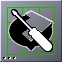
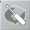

The dock is the column of icons located by default on the right side of the screen.
Any application can be attached to the dock. To do this, open an
application then simply left-click-and-drag the application's icon to
the last position on the dock. The dock will "attract" the icon and it
will remain on the dock until removed by the user (left-click-and-drag
the icon off the dock - it will disappear.) If you have saved your
Window Maker session prior to logout (or set Window Maker to autosave
your session upon logout) any icons you docked will automatically
reappear at your next - and each subsequent - session.
The dock has it's own menu for user configuration.
The dock can be configured to remain on top of maximized windows. To
do this, right-click on any docked icon then select "Keep on top" from
the application icon menu. This will keep the entire dock visible
(maximized windows will not be allowed to cover the dock). To allow the
dock to be covered, uncheck the "Keep on top" item in the application
icon menu.
The WMDock icon (by default, with the GNUstep logo) can be dragged
sideways
to switch the
the entire dock from one side of the display to the other.
Dragging the WMDock icon downward will move the dock off the display
with the
exception of the WMDock icon itself, which will remain visible. To
restore dock visibility, left-click-and-drag the dock back on screen.
Double-clicking the icon of a docked application starts the
application.
An application that has not been launched normally has an elipsis
(three dots) in the bottom-left-corner of the icon and appears in full
color as shown below.

When the application is running, the elipsis disappears from the
bottom-left-corner of the icon and the icon becomes "greyed out,"
giving a visual cue that the application is already open.

A docked icon that continues to show an elipsis and remains "full color" even after an instance of the application is running indicates that the application's settings have been modified to allow multiple launches from one docked icon. To do this you must open the application and modify the "application specific" settings in the "commands menu" of the application to allow "shared application icons."
Using the "launch" command in the "application icon menu" for the
icon is another way to start an application from the dock.
From version 0.80.0 on, the dock can "steal" appicons. This feature has
nothing to
do with Autoattract Icons. When you start an application from somewhere
else
than either the clip or the dock (menu or terminal), and the appicon
exists in
one of them (clip or dock), this appicon doesn't appear at the bottom
of your
screen. The appicon existing in the clip or the dock "stole" it. As a
result, the
appicon is the same as the one used to start the application from the
clip or
the dock.
Left-clicking and dragging an application icon to the dock adds this
application to the dock. Obviously, this means the application is
running!
Miniwindows (windows of
minimized applications) cannot be docked. The small titlebar on the
miniwindow differentiates it from an application's icon.
Dragging an icon off the dock removes the docked application.
There is a dock menu for each icon. Right-clicking the icon displays the "application icon menu." Select the "Settings..." option to configure the application.
The application's path and
its arguments, the command for middle-click launch, and the icon
employed can
be changed in this panel.
Shell commands such as redirection cannot be used in the command
field.
The desired icon must be in one of the directories displayed
in the panel while browsing. New directories can be added from the Search path preferences
A checkbox allows you to start the application when Window Maker is
first started. (Note: You want to be
careful with this. If you have, for example, your terminal
emulator, your file manager, and your browser set to start when Window
Maker is started you'll get an open terminal, an open file manager and
an open browser every time
you start a session! Normally you will only want to start certain
dockapps - "regular" applications like a terminal emulator or browser
can be started after your
session is up and going.)
From version 0.62.0 on, a checkbox can be used to prevent accidental
removal from the dock.
From version 0.70.0 on, a new field has been added for middle-click
launch. Entering, for example, "firefox" into a docked
application
settings panel will launch the Firefox browser.
{kind=link}